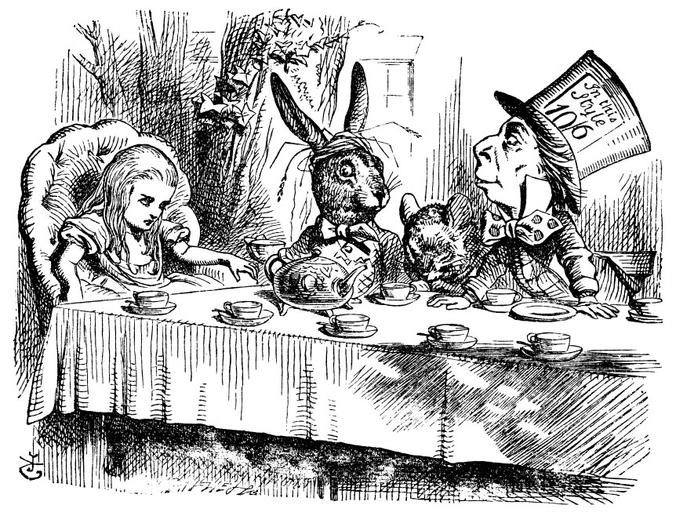

Giving Back to Drupal
Anna Kalata
@akalata
http://annakalata.com

Welcome!
We're glad you're here.
"We're all mad here"
What is a Community?
We are all working together
We have existing processes and social conventions
Contribution =/= Code
As a member of the community, you can:
Organize an event
Speak at an event
Volunteer at an event
Provide support
Issue Queues
Drupal Answers (StackOverflow)
IRC
Update/Create documentation
Use the issue queue to report bugs
As an employee or freelancer, you could also:
Donate money
Individual sponsorship tickets to events
Sponsor a group on Meetup.com
Join the Drupal Association
Use your professional skills
Writer
Designer
Coder
As a company or organization that relies on Drupal, you should:
Watch (or re-watch) today's keynote
Sponsor an event
Host a meetup and/or sponsor refreshments
Be open about your use of Drupal
Join the Drupal Association
Share or sponsor a contributed module on d.o
Allow employees to use time at work for their own contributions
Important Reminders
We are all human individuals, with:
emotions
needs
wants
limitations
challenges
blind spots
passions
friends
families
Questions?
Join Us!
Sprint Sunday
9:00 am -5:00 pm
UIC SCE Tower, Room 605
Feedback?
https://joind.in/talk/view/13809